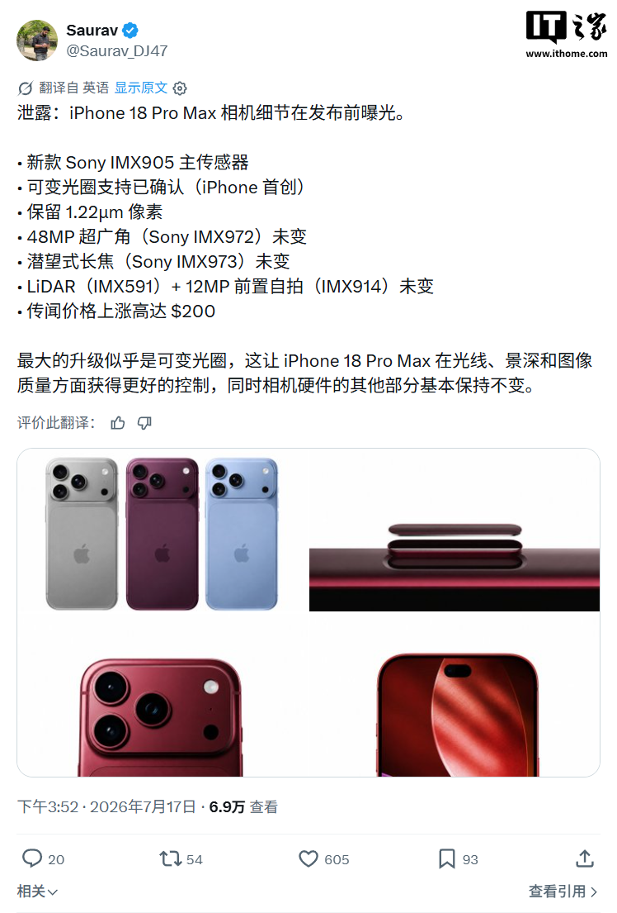
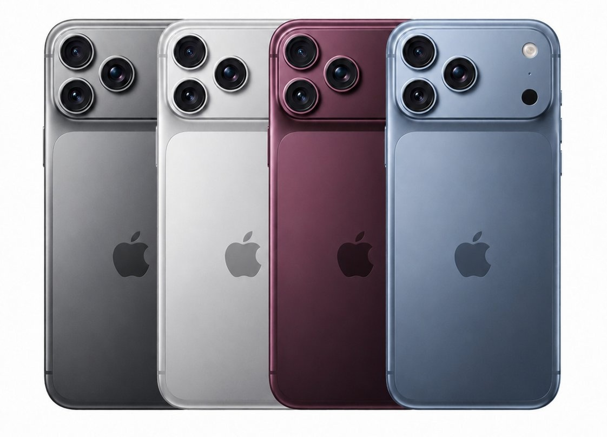

라인업
IT홈의 보도에 따르면, 정보원 @Saurav_DJ47이 X 플랫폼을 통해 iPhone 18 Pro 및 iPhone 18 Pro Max 두 모델의 사양 정보를 공개했습니다.
Apple은 2026년 9월 가을 출시 행사에서 iPhone 18 Pro, iPhone 18 Pro Max와 더불어 첫 번째 폴더블 디스플레이 모델(출시 후 'iPhone Ultra'로 명명될 것으로 예상) 등 총 세 가지 모델을 선보일 계획이며, iPhone 18 표준 모델은 2027년으로 출시가 연기될 예정입니다.
디자인 및 다이내믹 아일랜드
다이내믹 아일랜드와 관련하여 @earlyappleleaks가 공개한 세부 정보에 따르면, iPhone 18 Pro에 적용될 Face ID 센서를 통해 더욱 좁은 다이내믹 아일랜드를 구현할 예정입니다. 이전 소식에 따르면 신형 모델의 Face ID 카메라 타공 면적은 iPhone 17 Pro 대비 35% 줄어들 전망입니다.
외관 디자인 측면에서 iPhone 18 Pro와 iPhone 18 Pro Max는 정교한 카메라 유닛 설계, 더 높은 카메라 돌출부, 그리고 더 두꺼운 본체 특징을 갖출 것으로 알려졌습니다.
카메라
카메라 성능에서 가장 주목할 만한 부분은 가변 조리개입니다. 이를 통해 빛과 심도를 더욱 효과적으로 제어하고 이미지 품질을 한층 높일 수 있습니다.
- 새로운 Sony IMX905 메인 센서
- 가변 조리개 지원 확인
- 1.22μm 픽셀 유지
- 48MP 초광각(Sony IMX972) 동일
- 페리스코프 망원(Sony IMX973) 동일
- LiDAR(IMX591)
- 12MP 전면 셀피(IMX914) 동일
촬영 경험 측면에서 iPhone 18 Pro와 iPhone 18 Pro Max는 메인 카메라의 가변 조리개와 대구경 망원 렌즈를 결합하여 물리적으로 빛의 양과 심도를 조절하는 진정한 인물 사진 모드를 제공할 예정입니다. 이는 배경 흐림을 더욱 자연스럽고 입체적으로 만들 뿐만 아니라, 야간 및 실내 저조도 환경에서의 촬영 성공률과 화질을 크게 향상시킵니다.
성능
Apple iPhone 18 Pro와 iPhone 18 Pro Max는 최초로 2nm 공정의 A20 Pro 칩을 탑재할 예정이며, 새로운 WMCM 패키징을 채택하여 속도는 15%, 에너지 효율은 30% 향상될 것으로 예상됩니다.
배터리
IT홈의 이전 보도에 따르면 두 모델의 배터리 용량은 다음과 같습니다.
- iPhone 18 Pro — 중국 내수용 4056mAh / 미국판 4288mAh
- iPhone 17 Pro — 중국 내수용 3988mAh / 미국판 4252mAh
- iPhone 18 Pro Max — 중국 내수용 5391mAh / 미국판 5567mAh
- iPhone 17 Pro Max — 중국 내수용 4823mAh / 미국판 5088mAh
색상
Apple iPhone 18 Pro와 iPhone 18 Pro Max의 주요 색상은 딥 체리이며, 그 외에 라이트 블루, 실버, 다크 그레이 색상이 추가될 예정입니다.
총평
iPhone 18 Pro 및 iPhone 18 Pro Max는 2nm 공정의 A20 Pro 칩과 가변 조리개 시스템을 탑재하여 성능과 촬영 경험을 대폭 강화할 전망입니다. 또한, 정교해진 디자인과 개선된 배터리 용량, 그리고 첫 번째 폴더블 디스플레이 모델인 iPhone Ultra와 함께 출시될 예정입니다.
产品阵容与外观设计
Apple计划于2026年9月发布iPhone 18 Pro、iPhone 18 Pro Max以及首款折叠手机（预计命名为iPhone Ultra），而iPhone 18标准版将推迟至2027年发布。在外观方面，新机将采用更精致的相机单元设计、更高的相机凸起以及更厚的机身。
在交互设计上，由于Face ID传感器开孔面积缩减约35%，iPhone 18 Pro将实现更窄的灵动岛（Dynamic Island）。
影像系统升级
iPhone 18 Pro与iPhone 18 Pro Max的核心亮点在于引入可变光圈技术，通过物理调节进光量与景深来提升肖像模式的真实感。相关硬件参数如下：
- 主传感器：Sony IMX905（支持可变光圈）
- 像素尺寸：1.22μm
- 超广角镜头：48MP (Sony IMX972)
- 潜望式长焦：Sony IMX973
- LiDAR传感器：IMX591
- 前置自拍：12MP (IMX914)
性能与电池规格
在性能方面，iPhone 18 Pro和iPhone 18 Pro Max将首次搭载采用2nm工艺的A20 Pro芯片。该芯片采用全新WMCM封装，预计速度提升15%，能效提升30%。
两款机型的电池容量对比数据如下：
- iPhone 18 Pro：国行 4056mAh / 美版 4288mAh
- iPhone 17 Pro：国行 3988mAh / 美版 4252mAh
- iPhone 18 Pro Max：国行 5391mAh / 美版 5567mAh
- iPhone 17 Pro Max：国行 4823mAh / 美版 5088mAh
配色选择
Apple iPhone 18 Pro和iPhone 18 Pro Max的主打颜色为深樱桃色，此外还提供浅蓝色、银色和深灰色。
总结
iPhone 18 Pro系列预计将于2026年推出，核心亮点包括搭载2nm工艺的A20 Pro芯片、支持可变光圈的Sony IMX905主摄以及更窄的灵动岛设计。此外，该系列还将迎来显著的电池容量提升和全新的深樱桃色系。
ラインアップ
ITホームの報道によると、情報源@Saurav_DJ47がXプラットフォームを通じてiPhone 18 ProおよびiPhone 18 Pro Maxの2モデルに関する仕様情報を公開しました。
Appleは2026年9月の秋の発表イベントにおいて、iPhone 18 Pro、iPhone 18 Pro Maxに加え、初の折りたたみ式ディスプレイモデル（発売後に「iPhone Ultra」と命名される見込み）を含む計3つのモデルを発表する計画です。なお、iPhone 18標準モデルの発売は2027年へと延期される予定です。
デザインとダイナミックアイランド
ダイナミックアイランドに関しては、@earlyappleleaksが公開した詳細情報によると、iPhone 18 Proに採用されるFace IDセンサーを通じて、よりコンパクトなダイナミックアイランドを実現する見込みです。以前の報道では、新型モデルのFace IDカメラの占有面積はiPhone 17 Proと比較して35%削減されると予測されていました。
外観デザインにおいて、iPhone 18 ProおよびiPhone 18 Pro Maxは精巧なカメラユニット設計、より高いカメラの突出部、そして厚みのある本体が特徴になると報じられています。
カメラ
カメラ性能で最も注目すべき点は可変絞り（Variable Aperture）です。これにより光と被写界深度をより効果的に制御し、画質を一段と向上させることができます。
- 新しいSony IMX905メインセンサー
- 可変絞りのサポートを確認
- 1.22μmピクセルを維持
- 48MP超広角（Sony IMX972）は継続
- ペリスコープ望遠（Sony IMX973）は継続
- LiDAR（IMX591）
- 12MPフロントカメラ（IMX914）は継続
撮影体験において、iPhone 18 ProおよびiPhone 18 Pro Maxはメインカメラの可変絞りと大口径望遠レンズを組み合わせることで、物理的に光の量と被写界深度を調整する真のポートレートモードを提供します。これにより背景のボケがより自然で立体的なものになるだけでなく、夜間や屋内の低照度環境における撮影成功率と画質も大幅に向上します。
パフォーマンス
Apple iPhone 18 ProおよびiPhone 18 Pro Maxは、初めて2nmプロセスを採用したA20 Proチップを搭載する予定です。新しいWMCMパッケージングの採用により、処理速度は15%、エネルギー効率は30%向上すると予想されています。
バッテリー
ITホームの以前の報道によると、両モデルのバッテリー容量は以下の通りです。
- iPhone 18 Pro — 中国国内向け 4056mAh / 米国版 4288mAh
- iPhone 17 Pro — 中国国内向け 3988mAh / 米国版 4252mAh
- iPhone 18 Pro Max — 中国国内向け 5391mAh / 米国版 5567mAh
- iPhone 17 Pro Max — 中国国内向け 4823mAh / 米国版 5088mAh
カラー
Apple iPhone 18 ProおよびiPhone 18 Pro Maxの主要なカラーはディープチェリーであり、その他にライトブルー、シルバー、ダークグレーが追加される予定です。
まとめ
iPhone 18 Proシリーズは、2nmプロセスのA20 Proチップと可変絞りシステムを搭載することで、処理性能と撮影体験の両面で大幅な進化を遂げる見込みです。また、初の折りたたみ式モデル「iPhone Ultra」との同時展開や、洗練されたデザイン、向上したバッテリー容量など、さらなる進化が期待されています。
Lineup
According to a report by IT Home, source @Saurav_DJ47 shared specification details for the iPhone 18 Pro and iPhone 18 Pro Max on the X platform.
Apple plans to unveil three models during its September 2026 fall launch event: the iPhone 18 Pro, the iPhone 18 Pro Max, and the first foldable display model (expected to be named "iPhone Ultra"). Meanwhile, the release of the standard iPhone 18 model is expected to be delayed until 2027.
Design and Dynamic Island
Regarding the Dynamic Island, details shared by @earlyappleleaks suggest that the Face ID sensors used in the iPhone 18 Pro will allow for a narrower Dynamic Island. Previous reports indicate that the area of the Face ID camera cutout on the new model is expected to be reduced by 35% compared to the iPhone 17 Pro.
In terms of exterior design, the iPhone 18 Pro and iPhone 18 Pro Max are expected to feature a sophisticated camera unit design, a higher camera protrusion, and a thicker body.
Camera
The most notable feature in camera performance is the variable aperture. This allows for more effective control over light and depth while significantly enhancing image quality.
- New Sony IMX905 main sensor
- Confirmed support for variable aperture
- Maintains 1.22μm pixels
- 48MP ultra-wide (Sony IMX972) remains the same
- Periscope telephoto (Sony IMX973) remains the same
- LiDAR (IMX591)
- 12MP front selfie (IMX914) remains the same
Regarding the shooting experience, the iPhone 18 Pro and iPhone 18 Pro Max will offer a "true" portrait mode by combining the main camera's variable aperture with a large-aperture telephoto lens to physically adjust light levels and depth. This not only makes background blur look more natural and three-dimensional but also significantly improves success rates and image quality in night and indoor low-light environments.
Performance
The Apple iPhone 18 Pro and iPhone 18 Pro Max are expected to be the first models to feature the A20 Pro chip built on a 2nm process. By adopting new WMCM packaging, the speed is expected to increase by 15%, while energy efficiency is projected to improve by 30%.
Battery
According to previous reports from IT Home, the battery capacities for the two models are as follows:
- iPhone 18 Pro — China: 4056mAh / US: 4288mAh
- iPhone 17 Pro — China: 3988mAh / US: 4252mAh
- iPhone 18 Pro Max — China: 5391mAh / US: 5567mAh
- iPhone 17 Pro Max — China: 4823mAh / US: 5088mAh
Color
The primary color for the Apple iPhone 18 Pro and iPhone 18 Pro Max will be Deep Cherry, with additional options including Light Blue, Silver, and Dark Gray.
Overall Review
The iPhone 18 Pro and iPhone 18 Pro Max are expected to significantly enhance performance and the photography experience by featuring the A20 Pro chip on a 2nm process and a variable aperture system. Furthermore, they will be launched alongside an improved design, increased battery capacity, and the first foldable display model, the iPhone Ultra.
SummaryThe upcoming iPhone 18 Pro series is expected to feature a 2nm A20 Pro chip and a revolutionary variable aperture system for superior low-light photography. The lineup will also include a new foldable "iPhone Ultra" model, while the standard iPhone 18's release is pushed back to 2027.

